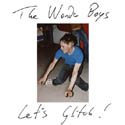
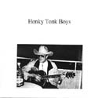

"...And It’s A Wonderful, New Start"
cassette album, released Aug 1999
C-90 + 24 page A6 booklet
Recorded Feb 1998 to Aug 1999
YOUTUBE PLAYLIST HERE
1. New Start 4:16 2. Junkie Friend 3:24 3. I Wait For The Impossible 2:54 4. While The Night Is Turning Into Day 3:36 5. Go Down Below 4:50 6. No More Love 5:00 7. Black & White Pictures 4:02 8. Washed Away 3:56 9. Easter Chicken 4:24 10. White And Silent 3:25 11. Fool For Me 5:16 12. My Old Friends 3:58 13. These Roots Are Made For Walking 4:44 14. A Little Something 4:00 15. Kiss You For Free 4:12 16. Be My Lord (Em) 1:40 17. ...And It’s Wonderful... 6:08 18. The Wonder Boys Theme 5:00 19. Thank You, Goodbye 4:45
Christian Kastén: backing and occasional lead vocals,
acoustic guitars, electric guitars.
David Liljemark: lead and double-tracked/backing
vocals, acoustic guitars, electric guitars, “bass”,
percussion, baby piano, alto saxophone, harmonica,
accordion, zither, mandolin, bamboo flute, toy
trumpet and a strange stringed instrument from China [er-hu].
1,2,3,7,8,12,14,15,16,19 by DL.
4,5,6,9,10,11,13,17,18 by CK/DL.
"II"
cassette album, released Dec 2000
C-120 + 32 page A6 booklet
Recorded Nov 1997 to Dec 2000
YOUTUBE PLAYLIST HERE
1. Intro 0:35 2. The Defeat Suite: 31:50 i: Alone, alas ii: A good couple iii: Lock up the cutlery iv: God bless the Wonder Girls v: Thank you for the blues vi: Tell me what is wrong dear vii: I think I´m beginning to hear voices viii: Voices/Chiquita chorale ix: The gun in my mouth x: Sax play (originally called ”El Disgusto”) xi: ...and then I started to think about you xii: Sweet, sweet defeat xiii: (coda) 3. Greetings From Gloomland 6:22 4. Slut-Machine 3:08 5. Kiss Me 4:20 6. Take Ten 5:32 7. I May Be Livin’ A Lie 3:42 8. Strings Attached 2:20 9. Tell Me What To Do 2:30 10. Kinda Sad Stories 5:08 11. Frost-bitten 4:06 12. Blues In Paradise 3:44 13. Leave It Lennie 7:00 14. Bye Bye Moody Girl 3:02 15. Last Rounds 5:02 16. The Infatuation Highway 4:24 17. Wonder Rock! 4:20 18. I Wonder Why 4:42 19. Outro 0:42
Christian Kastén: acoustic guitars, electric guitars. David Liljemark: vocals, acoustic guitars, electric guitars, “bass”, percussion, baby piano, alto saxophone, toy harmonica, mandolin, primitive programmable electronic toy keyboard, clarinet, zither, baby toy trumpet, tv, striptease ...and a strange stringed instrument from China [er-hu].
Lars Pettersson: harmonica on 12, 14; rhythm guitar on 18; strings on 8. Markus Lantto: violin on 2:iv, 19; sitar on 2:xii, 11.
Dan Liljemark: trumpet on 2:vi.
1,19 by GL (a lullaby by David’s mom, Gunnel). [Correction:
actually a wordless take on "Lilla snigel"] 2,3,5,6,7,8,9,10,12,14 by DL. 4,11,13,15,16,17 by CK/DL. 18 by LP/DL. (2:v by DL after B. Andersson & B. Ulvaeus.)
"EP" 7’’ single (black vinyl), released Dec 2001 200 copies. Includes lyric sheet I Wanna Die On Stage Records TWB003EP001
1. New Start 4:20 2. But When I’m Drunk I Want You Back 2:48 3. While The Night Is Turning Into Day 3:43 4. Wonder Rock! 4:11
Christian Kastén: guitars
David Liljemark: guitars, vocals, percussion, sax,
baby piano.
Lars Pettersson: harmonica on A2.
1,2 by DL. 3,4 by CK/DL. Recorded 1998-2001.
Note: There is only one new track on the EP, track 2. Track 1 & 3 are from "And It's A Wonderful, New Start", track 4 from "II".
"0,000 001 Million Wonder Boys Fans Can´t Be Wrong" cd collection, July 2002 I Wanna Die On Stage Records TWB004CD001
1. New Start 4:22 2. But When I´m Drunk I Want You Back 2:48 3. Sax Play* 0:52 4. No More Love 5:08 5. I Wait For The Impossible 3:01 6. Last Rounds 5:00 7. The Infatuation Highway 4:26 8. Strings Attached 2:24 9. Black & White Pictures 4:12 10. Chiquita Chorale* (excerpt) 1:13 11. Take Ten 5:30 12. These Roots Are Made For Walking 4:50 13. I Wonder Why 4:43 14. Alone, Alas/A Good Couple* 2:52 15. Sweet Sweet Defeat* 4:14 16. While The Night Is Turning Into Day 3:44 17. The Wonder Boys Theme 5:09 18. Wonder Rock! 4:18 19. Thank You, Goodbye 4:52 20. Be My Lord (Em) 1:47
* from “The Defeat Suite”
Christian Kastén: acoustic guitars & electric guitars (on 4, 6, 7, 16, 17, 18) and occasional vocals (on 17). David Liljemark: lead and double-tracked/backing vocals, acoustic guitars, electric guitars, “bass”, percussion, alto saxophone, baby piano, harmonica, zither, mandolin, clarinet, primitive programmable electronic toy keyboard, toy trumpets ...and that strange stringed instrument from China [er-hu].
Lars Pettersson: harmonica on 2, strings on 8, rhythm guitar on 13. Markus Lantto: sitar on 15.
1,2,3,5,8,9,10,11,14,15,19,20 by DL. 4,6,7,12,16,17,18 by CK/DL. 13 by LP/DL.
Recorded 1998-2001 in Lund and Stockholm, Sweden.
Note: all tracks on this “Best Of The Wonder Boys” cd collection have been previously available, in other formats.
1,4,5,9,12,16,17,19,20 from “And It´s A Wonderful, New Start”. 3,6,7,8,10,11,13,14,15,18 from “II”. 1,2,16&18 from “EP”.
"T.A.S.C.A.M. Manifesto" cd album, released Dec 2002 I Wanna Die On Stage Records TWB005CD002
1. Bad Luck Charm 3:40 2. Pawn Shop Bossa Blues 5:25 3. Shoe Panel Guitar Love 2:10 4. The Tourist 2:55 5. Red Eyes 4:38 6. Sax Jam 1:39 7. Scotty Moore 0:40 8. You Put On A Brave Face 1:28 9. (Whatever Happened To) All Our Little In-Jokes 2:16 10. Saturday Evening Sun 3:11 11. You Know I Just Can’t Handle It 2:14 12. This Town Kills You 4:52 13. Don’t Ask Me How It Is, It Just Hurts 0:56 14. (Stuck In A) Weird Conversation 3:45 15. Safe Sax 2:25 16. Rolled Oats, Sugar And Milk 1:37 17. The Ilanda Barrows Five 3:51 18. Another Feminist Statement 1:45 19. Later Later Mr. Undertaker 3:10 20. Guilt Trip Planner 3:40 21. Lament 3:55 22. The Wonder Boys Medley 4:10
1,3,4,6,7,8,9,10,13,15,16,18,19,21 by DL.
2,5,14,17 by CK/DL.
11,12 by DL/TE.
20 by DL/ML.
22 is a potpourri arranged by DL, of songs by DL,
CK/DL and LP/DL.
Christian Kastén: acoustic guitar on 2, 5, 14, 17. David Liljemark: vocals, acoustic guitars, electric guitars, alto saxophone, bass, percussion, drums, harmonium, harmonica, piano, zither, mandolin, primitive programmable electronic toy keyboard, bamboo flute, whistle, hair dryer, electric shaver, bird 7’’, TWB cd, hand claps, chinese marbles, door, spaghetti and other effects.
Lars Pettersson: harmonica on 5, strings on 22. Christian Gustavsson: bass, slide guitar and handclaps on 19. Markus Lantto: talking drum and violin on 20. Tim Ellison: songwriting response and suggestions by email on 11 &12.
Recorded Sept 2000 to Nov 2002 (bass line on track 20 from 14 Dec 1997) in Lund and Stockholm, with the exception of track 19, which was partly recorded in Karlstad by Christian Gustavsson at Studio Gröt.
“Happy New Year EP”
cd single, released January 2003
I Wanna Die On Stage Records TWB006CD003
1. Happy New Year 5:21 2. Strings Attached 2:00 3. Bad Luck Charm 3:04
1,2,3 by DL. (New arrangement of 3 by CG.)
David Liljemark: vocals on 1, 2, 3. All instruments on
1 (guitar, bass, bell, triangle, trumpet, horn,
sparklers, accordion, zither, ghost tube sound
machine, toy trumpet, toy harmonica, toy violin,
bamboo flute, road sign flute made by Markus Lantto,
stringed can, electric toy guitar, music boxes/toys) &
2 (guitar, bass, percussion, hand claps, strings).
Christian Gustavsson: all instruments on 3 (guitars,
bass, drums, tambourine) + additional hand claps and
some strings (the “alto” ones) on 2.
Christian Kastén: cell phone screams on 1.
All tracks recorded by Gröt (a.k.a. Christian
Gustavsson) at Studio Gröt, Karlstad, Sweden in
December 2002 (mostly the 26th).
Note: This cd-single contains one new track, track 1,
and new versions of two previously released songs.
Original version of track 2 first appeared on “II”,
then on “0,000 001 Million Wonder Boys Fans Can’t Be
Wrong”. Original version of track 3 available on
“T.A.S.C.A.M. Manifesto”. Cover paintings by unknown
artist “Eivor E”, possibly 1987-88 (flea market finds
purchased by DL in Lund 1998).
"Good Sides; Crime Will Prevail - and demos too!"
2-CD, released Sep 2003
I Wanna Die On Stage Records TWB007CD004
CD 1
1. You Bring Out My Good Sides* 4:25
2. It Takes Guts To Be Happy 3:15
3. A Nap 5:05
4. I Thought It Was A Joke 2:42
5. Thank You For The Blues* 1:00
6. Not Present 4:14
7. Granted 2:43
8. We Did It Our Way 5:05
9. Lately (Going Out) 4:40
10. Maggie 2:45
11. Lament (version 2) 2:18
12. Why Keep Looking For Love
(Where You Know You'll
Never Get It) 2:59
13. Shooting Star Chase 2:37
14. She Was Not The One 2:26
15. Crime Will Prevail* 6:52
16. (Missed the) Last Train
To Sleepville 2:33
All songs on cd 1 by DL, except 8 & 13 by ML/DL (5 by DL after Andersson/Ulvaeus).
All tracks recorded in 2003, except track 7, recorded in 2002/2003.
* recorded at Studio Gröt.
CD 2 (BONUS CD) 1. You Bring Out My Good Sides
(demo) 2003 4:30 2. I Wanna Be Bad 1998 2:50 3. Postcards From Alex 2001 4:19 4. Don't Pay Ransom For Me 2003 2:41 5. Leave A Message, Ellen, Next
Time (L.A.M.E.N.T.) 2003 4:40 6. Bad Luck Charm
(stripped remix) 2001 4:04 7. A Good Couple 1997 5:49 8. New Tits 2001 5:20 9. If You're Looking For Love,
Look Elsewhere (demo) 2000 4:19 10. Sax Play ("El Disgusto")
1989 0:49 11. Sax Play ("El Disgusto")
1990 1:11 12. Jimmy's Girl (Said "Wait!")
1997 4:33 13. Oh Baby You´re So Shy (demo)
(written 1995) 1997 2:50 14. So You Say You Wanna
Rock & Roll 1997 6:56 15. We Did It Our Way
(ML zither track only) 2003 4:54 16. My Summer Vacation in
Ukraina (a.k.a. Voices) 1997 1:35 17. Crime Will Prevail
(demo) 1997 6:59
All songs on cd 2 by DL, except 15 by ML/DL.
David Liljemark: vocals, acoustic and electric (& slide) guitars, bass, percussion, drums, alto saxophone, keyboard, trumpet, horn, zither, piano, toy keyboard, bell, ghost tube sound machine, mandolin, "bird imitator", baby toy horn, whistle, toy harmonica, coffee-percolator, comb, etc.
Markus Lantto:
banjo, acoustic guitar ("bass") & mandolin on cd1:13, zither
on cd1:8 & cd2:15.
Lars Pettersson: harmonica on cd1:10 and cd2:2.
Dan Liljemark: trumpet on cd1:1.
Emma
Holmér:
guest vocals on cd1:7.
Thomas A. Edison:
sampled voice (1927) on cd1:8.
Tracks recorded in Stockholm, Lund and Karlstad.
Track 1, 5 & 15 on cd1 recorded by Christian
Gustavsson at Studio Gröt, Karlstad.
Cover illustration by Gösta Gummesson, used with permission (originally
printed in Levande Livet 6/1957).
Cd2:2 was inspired by the back cover of Peter Bagge's Hate #2.
Track 5 on cd 1 and track 7, 10/11 & 16 on cd 2 originally appeared as parts of "The Defeat Suite" on The Wonder Boys "II", in different form. The latter three were later reprised on "0,000,001 Million Wonder Boys Fans Can't Be Wrong". Original versions of cd1:11 and cd2:6 available on "T.A.S.C.A.M. Manifesto". A different arrangement of the latter available on the "Happy New Year EP".
"The Grand Tradition Of Sitting Between Chairs"
cd album, released Feb 2004
I Wanna Die On Stage Records TWB008CD005
1. Intro (Eva's Chair) 0:58
2. No More Encores 6:08
3. Talk Of The Town 4:20
4. On The Floor 3:43
5. Good Match Rotting 4:04
6. No Camera 2:36
7. Not Present 3:57
8. She Was Not The One 2:17
9. Why Keep Looking For Love
(Where You Know You Can't Get It) version 2 2:12
10. All I Could Say At The Time 5:26
11. Lament 2:2 2:07
12. The Car Ran Out Of Gas
And I Guess We Ran Out Of Magic 3:08
13. But Of Course (Maybe I'll Laugh) 2:10
All songs written by DL, except track 2 & 12 by CG/DL, and 4 & 10 by CK/DL.
David Liljemark: lead & backing vocals, sax, guitars, bass, drums, percussion,
clarinet, trumpet, piano, scratching, mandolin, banjo, toy xylophone, organ,
bamboo flute, accordion, chinese marbles, car horn, etc.
Christian Gustavsson: all instruments on track 2 (minus sax) & 12: guitars,
bass, drums/programming, e-bow, organ, mandolin and Epson Stylus Color 800.
Christian Kastén: bass on 4, acoustic guitar on 4 & 10.
Emma Holmér: vocals on 6 & 12.
Lars Pettersson: piano solo on 3, vocals on 12.
Intro track dedicated to Eva
Nordwall.
Recorded in Karlstad (at Studio Gröt), Stockholm and Lund, Sweden, 2003/2004.
Earlier versions of track 7, 8, 9 & 11 available on the "Good Sides"
2-CD.
”J. Alströmer Disco EP”
cd single, released 22 May 2004
I Wanna Die On Stage Records TWB009CD006
1. Alströmer Disco (12’’ mix) 6:35 2. To-To-Doo (instrumental karaoke mix) 4:43 3. Fries Kids (early backing track) 4:40
Music written by DL/CG. Lyrics by DL.
Christian Gustavsson: programming.
David Liljemark: programming, keyboards, vocals, guitars, drums/percussion,
trumpet, sax, toy clarinet (or whatever it is - see top of the "pictures"
section).
Recorded in May 2004 at Studio Gröt, Karlstad and Studio Dayw, Stockholm.
Sleeve by DL.
”I Did It 4 U”
cd single, released 22 August 2004
I Wanna Die On Stage Records TWB010CD007
1. I Did It For You 5:22
2. I Did It For Love (instrumental mix) 5:22
3. I Did It For You (radio edit) 4:23
4. I Did It For A Reason (early backing track) 5:37
Music written by DL/CG. Lyrics by DL.
Christian Gustavsson: programming, keyboards.
David Liljemark: programming, keyboards, vocals, saxophone, trumpet, piano,
zither, drums/percussion.
Recorded in August 2004 at Studio Gröt, Karlstad and Studio Dayw, Stockholm.
Sleeve by DL. Back cover painting by unknown artist (thrift store find bought
by David).

”Let's Glitch!”
cd single, released 15 September 2004
I Wanna Die On Stage Records TWB011CD008
1. Let’s Glitch! 1:50
2. Let’s Glitch All Night Long 6:24
3. Let’s Glitch Again Like We Did Last Summer 4:03
4. Let’s Glitch, Baby 5:58
5. Let’s Glitch, Glitch, Glitch! 60:00
All tracks made by DL in September 2004 at Studio Dayw, Stockholm.
Photo by Susanna Nilsson, lettering by Fredrik
Jonsson, sleeve by DL.
”Die Große Schlagerparade”
cd, released 5 January 2005
I Wanna Die On Stage Records TWB012CD009
1. Hello/Dead Stalkers 4:15 2. Alströmer Disco 6:36
3. Something’s Happening To You 4:35 4. It Takes Guts To Be Happy 3:01 5. Love At First Sight 2:42 6. Archie + Celia (Archie Archaeopteryx + Celia Coelacanth = true!) 3:22 7. I Did It For You 5:22 8. This Used To Be Our Bench 4:28 9. Café CM 2:36 10. Those Were The Days 3:40 11. Letting Go Blues 2:16 12. Wa-Oh (Turn ’Round My Head) 3:38 13. Jesus Christ Super Sitar 5:19 14. Parliamo Italiano 2:51 15. Not Yours 2:11 16. Close-Down Announcement 7:02 17. Memory Of A Free Thrift Store Market 0:23 18. In-Jokes 5:08 19. Bad Luck Charm (Gröt version) 3:04 20. The Day Before Christmas 6:36 21. Let’s Glitch! (radio jingle edit) 0:21
Track 4, 5, 8, 9, 11, 12, 17, 18, 19, 21 written by DL;
2 & 7 by DL/CG;
1, 3, 10, 14, 16, 20 by CG/DL;
6 & 15 by CK/DL;
13 by ML/DL.
All lyrics by DL.
David Liljemark: vocals, guitars, sax, drums/percussion, programming, piano,
trumpet, clarinet, keyboards, accordion, mey, zither, scratching, whistle,
etc.
Christian Gustavsson: all (or most) instruments on track 1, 3, 10, 14, 16,
19 & 20: guitars, bass, drums & percussion, e-bow, mandolin, balalaika,
harmonica, piano + programming & keyboards, etc.
Christian Kastén: guitar on 6 & 15, vocals on 10.
Christian Hörgren: trombone on 16, zurna on 6, mey on 13.
Åsa Lundgren: vocals on 3.
Markus Lantto: sitar on 13.
Märit Aronsson: sitar on 17.
Lars Pettersson: harmonica on 13.
Dan Liljemark: trumpet on 8.
Recorded at Studio Gröt, Karlstad and Studio Dayw, Stockholm in 2004
(except for track 19, recorded dec 2002 and previously released on the “Happy
New Year EP” 2003). “Alströmer Disco”, “I Did
It For You” and “Let’s Glitch” released as singles
during 2004. Original versions of “Bad Luck Charm” and “(Whatever
Happened To) All Our Little In-Jokes” available on the “T.A.S.C.A.M.
Manifesto” cd (2002). Original version of “It Takes Guts To Be
Happy” available on the “Good Sides” 2-cd (2003).
Cover illustration + lettering by Coco Moodysson (previously printed in Coco
Platina Titan Total, 2002). "Booklet" illustration by Mattias
Bärjed
(ca 1986). Sleeve by DL.
{kind=link}
{kind=link}
”Die Kleine Schlagerparade”
cd, released 21 March 2005
I Wanna Die On Stage Records TWB013CD010
1. If We Get Through This,
We’ll Get Through Anything 4:52
2. Announcement (Death Dredger)
(Close-Down Announcement trombone
only mix + original lyrics) 1:14
3. The Car Ran Out Of Gas (blues version) 5:47
4. Synthing’s Happening To You 0:44
5. Those Were The Days (DL vocals only) 3:40
6. Something’s Happening To You (DL vocals only) 4:36
7. Letting Go Blues (jappa-aoa techno remix) 1:44
8. This Used To Be Our Bench
(stripped piano mix + scribble) 4:57
9. New Obsession (Good Match Rotting remix) 3:58
10. Wa-Oh (steamboat dub mix) 4:14
11. Lament 22 (stripped remix) 2:06
12. Love At First Sight (acoustic demo) 2:36
13. Parliamo Italiano (stripped remix) 2:46
14. Jesus Christ Super Sitar (remix) 5:23
15. Good Man Rocking
(Good Match Rotting remix II) 3:50
16. Sax Play ("El Disgusto") x 2
(demos 1994-10-25) 1:14
17. Previous Owner’s Blues (objet trouvé, 1997) 0:45
18. Gong Gong Song 6:22
19. Oh Lord (LP demo aug -94) 0:16
20. Oh Lord 8:47
21. Railway (CK demo -99)
(riff turned into These Roots... by DL) 1:23
22. Slapp Drönare 2:50
23. Let's Glitch (radio edit) 1:20
24. Let's Glitch, Alla Goa Göbbar! 1:20
25. Let's Glitch Nåt Så In I Helvete (medley) 1:55
26. Dadi (unlisted track: vintage DL recording) 0:59
All tracks written by DL, except
1, 2, 3, 4, 5, 6, 13 by CG/DL; 14 by ML/DL;
19 by LP; 20 by LP/DL; 21 by CK.
David Liljemark: vocals, guitars, sax, drums/percussion, programming, piano,
trumpet, clarinet, keyboards, accordion, mey, toy xylophone, scratching, etc.
Christian Gustavsson: all (or most) instruments on track 1, 4, 5, 6: guitars,
bass, drums & percussion, e-bow, mandolin, harmonica + programming &
keyboards, etc.
Christian Kastén: guitar & vocals on 21.
Lars Pettersson: harmonica on 3 & 14, vocals & guitar on 3, piano
on 19 & 20.
Markus Lantto: sitar on 14.
Eva Björkstrand: vocals on 1 & 3.
Christian Hörgren: trombone on 2, mey on 14.
Åsa Lundgren: vocals on 4.
Tracks recorded 2003-2005 where not stated otherwise, mainly in Stockholm,
Karlstad & Lund. Thanks to Johan Wanloo for, many years ago, providing
the found tape used on track 20 (on a mixtape called “Die Große
Schlagerparade” – yes, thanks for that title too...). Cover illustration
+ lettering by Coco Moodysson. "Booklet" illustration by Mattias
Bärjed (ca 1986). Sleeve by DL.
”Passion & Compassion”
cd, released 10 April 2006
I Wanna Die On Stage Records TWB014CD011
1. Intro, 9 Apr 2005 09:13 AM 0:54
2. There’s A Bat In The House 3:39
3. The Night When The Losers Won 5:25
4. The Girl From Tory Story 5:08
5. If We Get Through This,
We’ll Get Through Anything 4:52
6. Wednesday Night 2:25
7. Money-Spending Machine 5:14
8. The Car Ran Out Of Gas
(blues version – stripped mix) 5:45
9. A Gift I Never Had 4:17
10. Girl, You Need A Date With Copernicus 3:26
11. Frostbitten II 1:50
12. Waking Up Next To You 2:42
13. Lost Momentum 5:16
14. Blood On The Rocks 3:35
15. New Start 2005 3:50
16. Crucifiction in E Minor 3:48
17. No More Love 2005 6:13
18. Saffron Sunset 3:56
19. Baby Doll 3:40
20. Satan’s Death Waltz 3:20
21. New Start (reprise) 0:30
Track 2, 3, 4, 5, 8, 9, 10, 13, 14 written by CG/DL;
15, 16, 20, 21 by DL;
7 by DL/CG;
6, 12, 17 by CK/DL;
18 by CK/CG/DL;
11 by ML/CK/DL,
19 by LP/DL.
1 by anonymous stranger, calling on a Saturday morning....
All lyrics by DL.
David Liljemark: lead vocals, guitars, sax, “bass”, drums &
percussion, programming, piano, trumpet, clarinet, keyboards, harmonica, er-hu,
bamboo flute, gardening tools, etc.
Christian Gustavsson: guitars, bass, drums/programming, keyboards, percussion,
e-bow, mandolin, etc. (slide solo on 6 and backing vocals on 4!)
Christian Kastén: acoustic guitar on 6 & 12.
Lars Pettersson: harmonica on 8 & 14, guitar & vocals on 8 & 19.
Eva Björkstrand: vocals on 5 & 8.
Maria Boström: vocals on 2.
Åsa Lundgren: vocals on 4.
Markus Lantto: sitar on 11.
Steve Worrall: voice on 11.
Mayumi Worrall: voice on 18.
Petter Herbertsson: “bass”
guitar on 12.
Barndth (Henric Andersson):
synth solo on 7.
The major bulk of this material was recorded Jan 2005 – April 2006 at
Studio Gröt, Karlstad and Studio Dayw, Stockholm. Track 5 previously
released on “Die Kleine Schlagerparade” (2005), wich also includes
the “full” blues version of track 8. Original versions of tracks
15 & 17 available on “...And It’s A Wonderful, New Start”
(1999); original version of 11 on “II” (2000), and original version
of track 8 on “The Grand Tradition Of Sitting Between Chairs”
(2004). Back cover photo by Åsa
Grennvall, "booklet" photo by DL. Sleeve by DL.
"Den Flygande Värmlänningen (The Wonder Boys sjunger & spelar: Las Palmas, Robert Broberg, Brainbombs)" 7’’ single (black vinyl), released 6 Feb (_ April) 2008 250 copies. Fold-out sleeve. Lystring, Gylf #3 [TWB015EP002]
1. Vill Du Dubba 3:03 2. Fåglar (Intro) 0:16 3. Tom Top 4:33 4. I Detta Satans Rum 1:31
David Liljemark: vocals, programming, toy keyboard,
bamboo flute, percussion (keys), gong, clarinet.
1 by Calle Thörn/DL.
2 by Vreeswijk?/DL.
3 by R. Broberg/DL.
4 by Bryngelsson/Råberg/DL.
Recorded 2004?-2007.
Compiled by Fredrik Jonsson.
Sleeve by Petter Sjölund. Photo by Anna Edin.
Liner notes (supposedly) by Johannes Nilsson.
”Back In Business”
cd, released Oct 1, 2012
I Wanna Die On Stage Records TWB016CD012
YOUTUBE PLAYLIST HERE
1. In New Territory Rockin' On 0:54
2. Back In Therapy 8:02
3. You Got The Bullet 4:47
4. Slow Me Down 11:36
5. Space Rover 38-91 8:23
6. Conspiracy Theory 5:09
7. Remarried Divorcees 4:19
8. Back In Business 4:49
9. Ad Hoc Lovers 7:37
10. Old Used Tires Rolling Off 1:59
Track 2, 4, 6, 7, 8, 9 written by CG/DL;
3 by CG/ÅL/DL;
1, 5, 10 by DL.
David Liljemark: lead vocals, sax, guitar, keyboards, etc.
Christian Gustafsson: guitars, bass, drums/programming,
keyboards, e-bow, slide, percussion, etc.
Anna Liljemark: backing vocals on 4 & 7.
Christian Kastén: backing vocals on 4.
Maria Gustafsson Boström: backing vocals on 4.
Christian Hörgren: cello on 2.
Åsa Lundgren: co-written lyrics on 3.
Recorded 2006-2012 in Studio Gröt, Forshaga
and Studio Dayw, Stockholm (Sätra and Bandhagen), Sweden.
Sleeve by DL, back cover photo by CG.
Photo cd booklet back side: ”Logen 478 Kamratens Byggnadskommitté i Skifed”.

”The B.O.N.U.S. Manifesto”
cd, released July 1, 2013
I Wanna Die On Stage Records TWB017CD013
1. I Was So Close To Kissing You Then 3:40
2. Drunk 2:45
3. I Never Thought I’d Leave You Behind 1:36
4. A New Statue For A New Park 2:28
5. No Wave Disco (for Erik Ahlgren 1727) 5:30
6. The Dead Pay No Entrance 3:36
7. One For Daddy 1:35
8. Not Yours (video version) 2:12
9. Metal Heart 6:27
10. Hot Ass Blues 2:18
11. I Was So Spaced Out [IWSCTKYT variation part, looped] 2:12
12. Concrete Poetry Disco [early Money- Spending Machine] 1:37
13. Axe To Grind (idea) 1:10
14. That’s How It Should Be (instrumental) 4:56
15. Alströmer Disco very sloppy acoustic remake Aug 2, 2007 4:55
16. But When I’m Drunk I Want You Back (CG-Mayumi organ remake) 3:01
17. A Story (1978) [Madrigal with lyrics] 2:25
18. DL’s preliminary guitar solo for Girl, You Need A Date With Copernicus 0:33
19. Dayw in Studio Gröt Aug 2, 2007 [possibly titled ”I’m Content”, had we sampled a Pete Best quote] 5:58
20. Ocsid Evaw On (7271 Nerglha Kire rof) 5:30
21. The Rooster And The Hen (Clarinets In Love) 2:29
22. One For Daddy (stripped “bags only” mix) 1:17
23. Metal Heart (stripped ”sand only” mix) 3:49
24. Flute solo [intended for what song? Can’t remember ...] 0:19
25. Crappy Metal Riff (idea) 1:17
26. Mikal theme (written 1990, new recording 2011) 0:09
27. The Wonder Boys Might Save You [”Torture Reggae”, if DL had bothered with lyrics...] 4:21 28. Baren med vin & Josefin: Worms [unlisted track] 0:59
All tracks written by DL, except 11, 12, 15, 16 by DL/CG; 27 by CG; 3 & 8 by CK/DL;
4 & 21 by DL/AL; 10 by LP/DL; 9 by DL/MB; 7 & 22 by DL/NG; 5 & 20 by DL/EA. (28 trad. arr.)
David Liljemark: vocals, guitars, sax, clarinet, drums/percussion, programming, keyboards, mandolin, balalaika, bamboo flute, etc.
Christian Gustafsson: programming on 1, 5, 12, 19, 20, all instruments on 11, 16 & 27 (guitars, bass, programming, organ, etc),
(accordion on 28, a Baren med vin & Josefin outtake).
Christian Kastén: acoustic guitar on 3 & 8.
Lars Pettersson: harmonica and electric guitar on 6 & 10.
Anna Liljemark: clarinet on 4 & 21
Mattias Bärjed: electric guitar on 9.
Jan Winter: bag pipes on 1.
Petter Sjölund: sax on 8.
Mayumi Worrall: vocals on 16.
Nora Gustafsson: percussion & voice on 7 & 22.
Henric Andersson (Barndth): synth solo on 12.
Tracks recorded 2004 - 2011 in Stockholm, Karlstad and Forshaga, Sweden.
(Track 28 rec. Oct 16, 1991)
Cover painting by (M? K? H?) Karlson, bought by DL in Karlstad Dec 28, 2009.
Back cover painting by unknown artist, bought by DL in Stockholm Aug 15, 2010.
Sleeve by DL.
”Magnitizdat”
cd single, released May 6, 2014
I Wanna Die On Stage Records TWB018CD014
1. Magnitizdat 59:36Track performed by DL.
"DFV2 (Den Flygande Värmlänningen 2.
Covers av The Wonder Boys: Lilla Lovis, Niels Jensen, Hospitalet, Leif Elggren)" 7’’ single (black vinyl), released 15 June 2015
[was supposed to be out July 2014 ...] 110 copies.
Includes an 13 x 14,5 cm insert sheet, a flyer for
an imaginary "Een hommage" 2-CD. Lystring, Gylf #4 [TWB019EP003]
1. Spottar Aldrig Ut 0:30
2. H*rorna i M*lmö >7:29 3. Kvävd Av Kött 5:09 4. Talking To A Dead Queen 1:40
David Liljemark: vocals, toy keyboard, saxophone, guitar, programming, keyboard, clarinet. Simon Gärdenfors: guest vocals on A2.
[Re: incorrect running times on label B, see
News entry June 25, 2015]
1 by Lilla Lovis/DL. 2 by Niels Jensen/DL/DeMaio. 3 by Hospitalet/DL. 4 by Leif Elggren/DL. Recorded (2012-)2013-2014. Compiled by Fredrik Jonsson. Sleeve by Erik Uppenberg.
Photos by Anna Liljemark.
Related
If you’re familiar with the delightful swedish
language, and enjoy comics in the Fantagraphics and
Drawn & Quarterly vein, you will take big pleasure in
visiting David’s site at his book publisher’s, Optimal
Press:
www.optimalpress.com/liljemark.html
It also includes an index with info about former bands
like Slöphead
(‘80s childhood avant-garde “heavy
metal”), Slöphead
II (‘80s childhood heavy metal
revisited) and Sugar
Daddy
(noise
jazz).
Christian K also plays the bass in Caroline Soul.
Visit this swell pop/rock band’s web page here
and get their demos, ”Caroline Soul Is A Bad Girl”
was the second one from 2001, and there’s also a lovable live
recording circulating among fans. Feel free to email
Christian K about this!

Honky Tonk Boys was/is a side project influenced by
blues, country and early rock’n’roll. Band members are
Lars P, David L and Björn Radon. A 16 track cd was
released in may 2001, featuring ”Honky Tonk Love”,
”Honky Tonk Monkey”, ”Honky Tonk Tattoo”, ”Honky
Tonk
Sucker”, ”Honky Tonk Mama”, ”Honky Tonk Unemployment
Blues”, ”Honky Tonk Hit #305” and lots more. There are
also rumours about a whole bunch of 12-bar blues
recordings sung in swedish that are still awaiting
release.
Endless
Smile is a must if you’re into beautiful ambient noise
that’s unlike everything else. Mattias Ullman is the
genius behind this band, often featuring David on sax
or other stuff. ES released their first two cds in
1996 and 1998 on the legendary Releasing Eskimo label,
and has since released a couple of more albums which
you also should get. DL is particularly fond of the
track ”I Have Red Books”, download, listen, enjoy.
"Knisen & Knåkan har tårtkalas" (Bonnier Carlsen,
May
2003); "The Cnow & The Pignet have a cake party". A 10 x
10 cm "pixi" children's book by David & Christian K. In swedish
only, sorry. Followed in Dec 2005 by "Knisen & Knåkan går
och badar" ("The Cnow & The Pignet go swimming"), and in July
2011 by "Knisen & Knåkan lär sig dansa" ("The Cnow and The
Pignet learn how to dance").
In 2001, David made a number of comic strips about
The Soundtrack Of Our Lives, collected in a booklet called
"Cartoon Animals" (yes, referring to the old Union Carbide classic)
which was sold on TSOOL's tours and was to be included
in the 2-LP vinyl edition of their album "Behind The Music".
These comics (+ more) can now be seen in the
"Archive" section at www.tsool.net
”Emma & David” cd-single, released 26 Feb 2004.
Features the tracks “Firefly” (in two different versions) and
“Might Aswell Be Dead”, written & performed by
Emma Holmér and David L. Emma
is the voice and sole
songwriter of Mine,
who released two cd albums and a number
of singles between
1997-2001, available through
Massproduktion
and ginza.se. Emma has guested
on a couple
of The Wonder Boys tracks, providing vocals on “Granted”,
“No Camera” and “The Car Ran Out Of Gas And I Guess We
Ran Out Of Magic”.
In feb 2005, David released a ”solo” 2-cd which is an utterly
weird
mish-mash of the rare, obscure and sometimes ridiculous: early
interviews & radio snippets, “spoken word” home recordings
&
“idea tapes” excerpts, experimental music tracks, unused
commissioned work for swedish tv, an answering machine hate
message, a Las Palmas cover, some Sugar Daddy noise jazz, and
more. Note: it’s definitely more fun if you know the swedish language,
but even if not, there’s still enough music to satisfy the die-hard
fan.
Consider this a “fan club release” or official bootleg for ”The
Dayw
Appreciation Society”.
David Liljemark’s short movie ”Ett litet barn” (”A
little child”), ca 24
min, is included among the extra material on Lukas
Moodysson’s
brilliant “Ett hål
i mitt hjärta” (“A
hole in my heart”) DVD, released in
Sweden 16 March 2005. “Ett litet barn/A little child” is written
&
directed by David (2002) and produced by Lukas (2004). Starring
David, his brother Dan and their parents. In line with the “childhood
revisited” concept, the soundtrack is performed by David’s old
band
Slöphead (1984/85), Slöphead II (1994-98) and the reunited
Slöphead (1998); there’s also the lullaby David’s Mom used
to sing,
hummed by her and also performed by The Wonder Boys (=”Intro”
track on The Wonder Boys “II” cassette album, 2000).
The Vaults’ “It Looks Cold, But Not Like Rain” cd (released
in
June 2005) is a collection consisting of mostly previously released
experimental/instrumental Wonder Boys tracks. Detailed information
about it here.